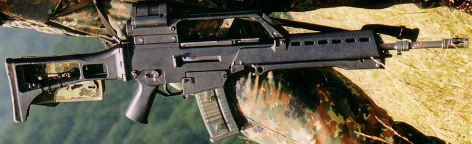

HK G36突擊步槍

G36是德國黑克勒-科赫公司 (H&K)在1995年推出的現代化突擊步槍，發射5.56×45公釐北約制式子彈，用來取代同為H&K公司產品的G3步槍。G36大量採用了以不鏽鋼為骨架的玻璃纖維加強複合材料，因此武器重量較輕。在開發階段其型號為HK50。
- G36是德國聯邦國防軍、西班牙陸軍及西班牙海軍的制式突擊步槍，多個國家及地區的軍隊及警察亦有裝備，在沙烏地阿拉伯獲授權生產。
G36在1997年取代G3成為德國聯邦國防軍的制式步槍，命名為Gewehr 36（36型步槍）。在1999年西班牙陸軍以G36取代CETME Model L，挪威的Kystjegerkommandoen在1990年代末期亦有裝備。英國陸軍亦有進口少量G36作制式武器評估，但最後沒有大量取代原本的L85A2。
G36亦是多個國家軍隊及警隊的武器，包括英國各個應變部隊、法國警察總署特勤隊、葡萄牙共和國民警衛、荷蘭警隊、波蘭警察（G36C、G36E）、美國國會警察及洛杉磯警局（之後被HK416取代）、菲律賓海軍特種作戰部隊及輕裝快速反應部隊（LRB）、葡萄牙海軍陸戰隊、葡萄牙空軍及NFOT、立陶宛特種部隊（G36及AG36）、印尼特種部隊（G36及G36C）、香港特別任務連（G36KV）、澳門特別行動組（G36C）、泰國皇家三棲特戰隊、聯合國維和部隊（G36K）等。
G36在2008年南奧塞梯衝突中出現過（當時為喬治亞特種部隊所持有）。2011年利比亞內戰中也有士兵試射從格達費衛隊處繳獲的G36的鏡頭並引發了HK公司對槍支流入的調查，該照片還被一些人當作「西方傭兵投入戰爭」的證據。
2015年4月22日，德國聯邦國防部正式宣布不再採購和使用G36，並將盡快將其替換。